Last updated: 2024-03-29
Checks: 7 0
Knit directory: rta/
This reproducible R Markdown analysis was created with workflowr (version 1.7.0). The Checks tab describes the reproducibility checks that were applied when the results were created. The Past versions tab lists the development history.
Great! Since the R Markdown file has been committed to the Git repository, you know the exact version of the code that produced these results.
Great job! The global environment was empty. Objects defined in the global environment can affect the analysis in your R Markdown file in unknown ways. For reproduciblity it’s best to always run the code in an empty environment.
The command set.seed(20200501) was run prior to running
the code in the R Markdown file. Setting a seed ensures that any results
that rely on randomness, e.g. subsampling or permutations, are
reproducible.
Great job! Recording the operating system, R version, and package versions is critical for reproducibility.
Nice! There were no cached chunks for this analysis, so you can be confident that you successfully produced the results during this run.
Great job! Using relative paths to the files within your workflowr project makes it easier to run your code on other machines.
Great! You are using Git for version control. Tracking code development and connecting the code version to the results is critical for reproducibility.
The results in this page were generated with repository version bd41812. See the Past versions tab to see a history of the changes made to the R Markdown and HTML files.
Note that you need to be careful to ensure that all relevant files for
the analysis have been committed to Git prior to generating the results
(you can use wflow_publish or
wflow_git_commit). workflowr only checks the R Markdown
file, but you know if there are other scripts or data files that it
depends on. Below is the status of the Git repository when the results
were generated:
Ignored files:
Ignored: .Rhistory
Ignored: .Rproj.user/
Ignored: analysis/figure/
Ignored: code/.Rapp.history
Ignored: data/.Rhistory
Ignored: data/RDS/
Ignored: run/
Untracked files:
Untracked: LICENSE
Untracked: Rplot.pdf
Untracked: SENSI_chr7_snps.R
Untracked: Untitled.R
Untracked: analysis/17_mapping_interpretation_old.Rmd
Untracked: analysis/temp.txt
Untracked: code/DO_IVSA_SALINE_pleiotropy.R
Untracked: code/DO_IVSA_SENS_pleiotropy.R
Untracked: code/DO_SENS_SALINE_pleiotropy.R
Untracked: code/DO_eQTL_perms.R
Untracked: code/DO_eQTL_score_calc.R
Untracked: code/SENSI_chr7_snps.R
Untracked: code/STAR_RSEM_416.sh
Untracked: code/eQTL_plotting_DO_striatum_416.R
Untracked: code/ggplot_pub_themes.R
Untracked: code/pleitropy_analysis.sbatch
Untracked: code/pleitropy_saline_analysis.sbatch
Untracked: code/pleitropy_sensi_saline_analysis.sbatch
Untracked: code/rta_mapping_figure_leftover.R
Untracked: data/20_elastic_mv_results.csv
Untracked: data/20_elasticnet_predictions.RDS
Untracked: data/DO_416_DGEList.RDS
Untracked: data/DO_416_DGEList_unfiltered (michael.saul@jax.org 2).RDS
Untracked: data/DO_416_DGEList_unfiltered (michael.saul@jax.org 3).RDS
Untracked: data/DO_416_DGEList_unfiltered (michael.saul@jax.org 4).RDS
Untracked: data/DO_416_DGEList_unfiltered (michael.saul@jax.org).RDS
Untracked: data/DO_416_DGEList_unfiltered.RDS
Untracked: data/DO_416_ERCC_DGEList.RDS
Untracked: data/DO_416_ERCC_cpm.RDS
Untracked: data/DO_416_normrt.RDS
Untracked: data/DO_416_pheno.RDS
Untracked: data/DO_416_pheno_allgenes.RDS
Untracked: data/DO_416_voom (michael.saul@jax.org).RDS
Untracked: data/DO_416_voom.RDS
Untracked: data/DO_416_voom_allgenes (michael.saul@jax.org 2).RDS
Untracked: data/DO_416_voom_allgenes (michael.saul@jax.org).RDS
Untracked: data/DO_416_voom_allgenes.RDS
Untracked: data/DO_416_voom_cpresiduals.RDS
Untracked: data/DO_AQ_active_CoV_toptable_annotated.RDS
Untracked: data/DO_AQ_lever_ratio_toptable_annotated.RDS
Untracked: data/DO_AQ_mean_inf_toptable_annotated.RDS
Untracked: data/DO_AQ_rate_toptable_annotated.RDS
Untracked: data/DO_IVSA_SALINE_pleio_lods.RDS
Untracked: data/DO_IVSA_SENS_pleio_lods.RDS
Untracked: data/DO_IVSA_SENS_pleio_pvl.RDS
Untracked: data/DO_IVSA_acquisition_cancor_df.RDS
Untracked: data/DO_IVSA_acquisition_logit_df.RDS
Untracked: data/DO_IVSA_acquisition_logit_glm.RDS
Untracked: data/DO_IVSA_all_cancor_df.RDS
Untracked: data/DO_IVSA_all_cancor_df_2024-03-27.RDS
Untracked: data/DO_IVSA_data.RDS
Untracked: data/DO_IVSA_novelty_cancor_ALL.RDS
Untracked: data/DO_IVSA_novelty_cancor_AQ.RDS
Untracked: data/DO_IVSA_novelty_data.RDS
Untracked: data/DO_IVSA_prediction_ACQUISITION_logit.RDS
Untracked: data/DO_IVSA_prediction_ACQUISITION_logit_2021-01-04.RDS
Untracked: data/DO_IVSA_prediction_ALL_cancor.RDS
Untracked: data/DO_IVSA_prediction_ALL_cancor_2021-01-04.RDS
Untracked: data/DO_IVSA_prediction_ALL_cancor_old.RDS
Untracked: data/DO_IVSA_prediction_AQ_cancor.RDS
Untracked: data/DO_IVSA_prediction_AQ_cancor_2021-01-04.RDS
Untracked: data/DO_IVSA_prediction_a1_ACQUISITION_logit.RDS
Untracked: data/DO_IVSA_prediction_a2_AQ_cancor.RDS
Untracked: data/DO_IVSA_prediction_a3_ALL_cancor.RDS
Untracked: data/DO_IVSA_prediction_a3_ALL_cancor_2024-03-25.RDS
Untracked: data/DO_IVSA_prediction_a3_ALL_cancor_2024-03-27.RDS
Untracked: data/DO_IVSA_prediction_a4_male_ALL_cancor.RDS
Untracked: data/DO_IVSA_prediction_a5_female_ALL_cancor.RDS
Untracked: data/DO_IVSA_raw_data.RDS
Untracked: data/DO_IVSA_transformed_data.RDS
Untracked: data/DO_LIMS_data.RDS
Untracked: data/DO_RTG_a1_new.qtl.RData
Untracked: data/DO_RTG_a1_new_1000x.qtlpermu.RData
Untracked: data/DO_RTG_a1_new_mapping_1000x.RData
Untracked: data/DO_RTG_a2_new.qtl.RData
Untracked: data/DO_RTG_a2_new_1000x.qtlpermu.RData
Untracked: data/DO_RTG_a2_new_mapping_1000x.RData
Untracked: data/DO_RTG_a3_new.qtl.RData
Untracked: data/DO_RTG_a3_new_1000x.qtlpermu.RData
Untracked: data/DO_RTG_a3_new_mapping_1000x_01.RData
Untracked: data/DO_RTG_a3_new_mapping_1000x_02.RData
Untracked: data/DO_RTG_a4_new.qtl.RData
Untracked: data/DO_RTG_a5_new.qtl.RData
Untracked: data/DO_RTG_elasticnet_new.qtl.RData
Untracked: data/DO_RTG_elasticnet_new_mapping_1000x.RData
Untracked: data/DO_RTG_project_df_for_mapping.RDS
Untracked: data/DO_RTG_project_df_for_mapping_2020-11-06.RDS
Untracked: data/DO_RTG_project_df_for_mapping_a2.RDS
Untracked: data/DO_RTG_project_df_for_mapping_sexspecific.RDS
Untracked: data/DO_SENS_SALINE_pleio_lods.RDS
Untracked: data/DO_cocaine_measures_data.RDS
Untracked: data/DO_demographic_data_df.RDS
Untracked: data/DO_eigengene_significance.RDS
Untracked: data/DO_eigengenes.RDS
Untracked: data/DO_elasticnet_GEX_pvalue_histograms.RData
Untracked: data/DO_highcor_cpresiduals_datatable.RDS
Untracked: data/DO_holeboard_data_df.RDS
Untracked: data/DO_holeboard_summarized.RDS
Untracked: data/DO_lightdark_data_df.RDS
Untracked: data/DO_mQTL_peaks.RDS
Untracked: data/DO_mQTL_scan1s.RDS
Untracked: data/DO_module_membership.RDS
Untracked: data/DO_novelplace_data_df.RDS
Untracked: data/DO_novelty_COC_cancor.RDS
Untracked: data/DO_novelty_SAL_cancor.RDS
Untracked: data/DO_novelty_data.RDS
Untracked: data/DO_novelty_response_data.RDS
Untracked: data/DO_novelty_response_data_for_RTG.RDS
Untracked: data/DO_novelty_response_data_with_transform.csv
Untracked: data/DO_novelty_saline_cocaine_cancor.RDS
Untracked: data/DO_openfield_data_df.RDS
Untracked: data/DO_paraclique_data.el
Untracked: data/DO_paraclique_eigengenes.RDS
Untracked: data/DO_paraclique_significance_elasticnet.RDS
Untracked: data/DO_paracliques.RDS
Untracked: data/DO_paracliques_significance.RDS
Untracked: data/DO_ploidy_calls.RDS
Untracked: data/DO_pmap.RDS
Untracked: data/DO_pvalue_histograms.RData
Untracked: data/DO_rtg_a1_toptable_annotated.RDS
Untracked: data/DO_rtg_a2_toptable_annotated.RDS
Untracked: data/DO_rtg_a3_toptable_annotated.RDS
Untracked: data/DO_rtg_m1_toptable_annotated.RDS
Untracked: data/DO_rtg_m2_toptable_annotated.RDS
Untracked: data/DO_rtg_m3_toptable_annotated.RDS
Untracked: data/DO_saline.qtl.RData
Untracked: data/DO_saline_measures_data.RDS
Untracked: data/DO_sensi_cocaine.qtl.RData
Untracked: data/DO_str_2016_eQTL.RData
Untracked: data/DO_str_2016_gm4qtl2.zip
Untracked: data/DO_str_2016_gm4qtl2_intensities.fst
Untracked: data/DO_voom_cpresiduals_NArm.RDS
Untracked: data/DO_wgcna.RDS
Untracked: data/IVSA_RTG_a3_blup.pdf
Untracked: data/IVSA_h2_2019-11-18.tsv
Untracked: data/IVSA_metadata_sheet.RDS
Untracked: data/ME16_edges.tsv
Untracked: data/Mus_musculus.GRCm38.94.parsed.RDS
Untracked: data/Paraclique_19_MF_AMIGO.txt
Untracked: data/RTG_QTL_peaks.RDS
Untracked: data/RTG_figure.RDS
Untracked: data/SENSI_chr7_snps.RData
Untracked: data/SENS_RTG/
Untracked: data/Tyr2_genotypes.RDS
Untracked: data/Tyr_genotypes.RDS
Untracked: data/blup_chr7_DO_RTG_a3.RDS
Untracked: data/blup_spearman_cors.RData
Untracked: data/cc_variants/
Untracked: data/chr18_QTL_results.RDS
Untracked: data/chr4_QTL_results.RDS
Untracked: data/chr7_a3_QTL_results.RDS
Untracked: data/chr7_blups_with_rtg.RDS
Untracked: data/chr7_cocaine_BLUP.RDS
Untracked: data/chr7_gene_blup.RDS
Untracked: data/chr7_qtl_cors_with_spearman_blups.RDS
Untracked: data/chr7_sensi_cocaine_BLUP.RDS
Untracked: data/cis/
Untracked: data/eQTL_annotated_peaks.RDS
Untracked: data/eQTL_plots.RData
Untracked: data/figures/
Untracked: data/founders_key/
Untracked: data/gigamuga/
Untracked: data/gwas/
Untracked: data/info/
Untracked: data/m2G.a2.RTG.chr4snp.RData
Untracked: data/mapping/
Untracked: data/mapping_from_hao/
Untracked: data/mpd_measures_saline.txt
Untracked: data/mpd_measures_saline_cocaine.txt
Untracked: data/perms/
Untracked: data/pleio_df.RDS
Untracked: data/qtl2/
Untracked: data/raw/
Untracked: data/resources/
Untracked: data/tads_loops/
Untracked: data/transcripts/
Untracked: data/variants/
Untracked: logs/
Untracked: new_RTG_a3.jpeg
Untracked: output/DO_module_membership.tsv
Untracked: output/DO_paraclique_df.tsv
Untracked: output/RDS/
Untracked: output/RTG_out/
Untracked: output/docs_backup_2020-07-30.tar.gz
Untracked: output/elastic_net_out/
Untracked: output/mapping_figure.pdf
Untracked: output/mapping_plot.pdf
Untracked: output/mediation_all_rta_figure.pdf
Untracked: output/mediation_all_rta_figure_with_eed.pdf
Untracked: output/pleio_plot2.pdf
Untracked: rstudio_rta.sif
Untracked: singularity/
Untracked: tmp/
Untracked: var/
Unstaged changes:
Deleted: .Rprofile
Modified: .gitignore
Modified: README.md
Modified: analysis/17_mapping_interpretation.Rmd
Modified: analysis/_site.yml
Note that any generated files, e.g. HTML, png, CSS, etc., are not included in this status report because it is ok for generated content to have uncommitted changes.
These are the previous versions of the repository in which changes were
made to the R Markdown
(analysis/05_DO_expression_prep_STAR_RSEM.Rmd) and HTML
(docs/05_DO_expression_prep_STAR_RSEM.html) files. If
you’ve configured a remote Git repository (see
?wflow_git_remote), click on the hyperlinks in the table
below to view the files as they were in that past version.
| File | Version | Author | Date | Message |
|---|---|---|---|---|
| Rmd | bd41812 | Michael C. Saul | 2024-03-29 | Committing in the new repository for the first time. Changing biomaRt repository to January 2019. |
| html | a292466 | Michael C. Saul | 2021-12-06 | Build site. |
| Rmd | 362d53f | Michael C. Saul | 2021-12-06 | Initial commit for Sumner |
| html | 7687eb6 | Michael C. Saul | 2021-04-19 | Build site. |
| Rmd | 8a53a3d | Michael C. Saul | 2021-04-19 | Prepping DO differential expression with filterByExpr used as filtering criterion |
| html | 2e38c65 | Michael C. Saul | 2020-07-30 | Rolling back to working version. |
| html | be1304f | Michael C. Saul | 2020-05-29 | Build site. |
| Rmd | 06f74b7 | Michael C. Saul | 2020-05-29 | Updated to fix bug with subject IDs that affected X aneuploidy |
| html | cfd5b48 | Michael C. Saul | 2020-05-04 | Build site. |
| Rmd | c4e9a5f | Michael C. Saul | 2020-05-04 | Minor tweak of md5 checksums of output files as a table |
| html | 661f8d8 | Michael C. Saul | 2020-05-04 | Build site. |
| Rmd | f5d51a3 | Michael C. Saul | 2020-05-04 | Fixing md5 checksums of output files as a table |
| html | 6dc66a4 | Michael C. Saul | 2020-05-04 | Build site. |
| Rmd | 0d0753e | Michael C. Saul | 2020-05-04 | Adding in md5 checksums of output files as a table |
| html | dee6333 | Michael C. Saul | 2020-05-04 | Build site. |
| Rmd | a50fe70 | Michael C. Saul | 2020-05-04 | Initial commit of expression prep data. |
This analysis is performed to preprocess and summarize striatum expression data prior to expression correlation analysis.
Getting current date
current_date = format(Sys.time(),"%Y-%m-%d")Calling R libraries necessary for this analysis.
library("limma")
# library("GenomicRanges")
library("tibble")
library("tximport")
library("edgeR")
library("ggplot2")
library("gplots")
Attaching package: 'gplots'The following object is masked from 'package:stats':
lowesslibrary("RColorBrewer")
library("biomaRt")
library("ggbeeswarm")norm_rank_transform() functionGetting a normal rank transformation function that can handle
NA values from the following formula:
\(Y^t_i={\phi}^{-1}({{r_i-c}\over{N-2c+1}})\)
where \(r_i\) is the rank, \(N\) is the number of ranked samples, \(\phi^{-1}\) is the inverse normal funcion
(equivalent to qnorm() in R). The original recommended
value of \(c=3/8\) was per Beasley and
Erickson, 2010, but we use \(c=0\).
Our work appears to meet their sample size recommendations.
norm_rank_transform = function(x, c = 0) {
stopifnot(is.numeric(x) & is.vector(x))
x_noNA = which(!is.na(x))
N = length(x_noNA)
x[x_noNA] = qnorm((rank(x[x_noNA], ties.method = "average") - c) / (N - (2 * c) + 1))
return(x)
}Using the demographic data to generate a data frame that can hold phenotype data.
The md5 checksum of the input file
(416_Matched_DO_Generation_and_Sex_Data.csv) is:
1f3c8e14eba6754b3e93c5e31246c3ad.
DO_demodata = read.csv("./data/raw/416_Matched_DO_Generation_and_Sex_Data.csv", stringsAsFactors = FALSE)
row.names(DO_demodata) = as.character(DO_demodata$ExpSess.Subject)
DO_pheno = DO_demodata[,c("Sex","Generation")]
rm(list = c("DO_demodata"))Note: the transcript EM results have been gzipped for use in this workflowr project.
# Preparing to read in aligned and summarized data
DO_RSEM_dir = "./data/transcripts/"
DO_RSEM_files = list.files(path = DO_RSEM_dir)
DO_RSEM_files = data.frame(base = DO_RSEM_files,
stringsAsFactors = FALSE)
DO_RSEM_files$behavior_id = gsub("^16NGS-001-Chesler_(\\d{4})_[sS]t_(GT16-\\d{5})_\\w{6}_S\\d{1,3}_RSEM_quant.isoforms.results.gz$", "\\1", DO_RSEM_files$base)
DO_RSEM_files$sample_id = gsub("^16NGS-001-Chesler_(\\d{4})_[sS]t_(GT16-\\d{5})_\\w{6}_S\\d{1,3}_RSEM_quant.isoforms.results.gz$", "\\2", DO_RSEM_files$base)
row.names(DO_RSEM_files) = DO_RSEM_files$behavior_id
file_i = read.table(paste(DO_RSEM_dir,DO_RSEM_files[1,"base"],sep=""), header = TRUE, sep = "\t", stringsAsFactors = FALSE)
DO_tx2gene = data.frame(TXNAME = file_i$transcript_id,
GENEID = file_i$gene_id,
stringsAsFactors = FALSE)
DO_tx2gene = as_tibble(DO_tx2gene)
txi_i = tximport(files = paste(DO_RSEM_dir,
DO_RSEM_files[,"base"],
sep=""),
type = "rsem",
tx2gene = DO_tx2gene,
countsFromAbundance = "lengthScaledTPM",
abundanceCol = "TPM",
ignoreTxVersion = TRUE)reading in files with read_tsv1 2 3 4 5 6 7 8 9 10 11 12 13 14 15 16 17 18 19 20 21 22 23 24 25 26 27 28 29 30 31 32 33 34 35 36 37 38 39 40 41 42 43 44 45 46 47 48 49 50 51 52 53 54 55 56 57 58 59 60 61 62 63 64 65 66 67 68 69 70 71 72 73 74 75 76 77 78 79 80 81 82 83 84 85 86 87 88 89 90 91 92 93 94 95 96 97 98 99 100 101 102 103 104 105 106 107 108 109 110 111 112 113 114 115 116 117 118 119 120 121 122 123 124 125 126 127 128 129 130 131 132 133 134 135 136 137 138 139 140 141 142 143 144 145 146 147 148 149 150 151 152 153 154 155 156 157 158 159 160 161 162 163 164 165 166 167 168 169 170 171 172 173 174 175 176 177 178 179 180 181 182 183 184 185 186 187 188 189 190 191 192 193 194 195 196 197 198 199 200 201 202 203 204 205 206 207 208 209 210 211 212 213 214 215 216 217 218 219 220 221 222 223 224 225 226 227 228 229 230 231 232 233 234 235 236 237 238 239 240 241 242 243 244 245 246 247 248 249 250 251 252 253 254 255 256 257 258 259 260 261 262 263 264 265 266 267 268 269 270 271 272 273 274 275 276 277 278 279 280 281 282 283 284 285 286 287 288 289 290 291 292 293 294 295 296 297 298 299 300 301 302 303 304 305 306 307 308 309 310 311 312 313 314 315 316 317 318 319 320 321 322 323 324 325 326 327 328 329 330 331 332 333 334 335 336 337 338 339 340 341 342 343 344 345 346 347 348 349 350 351 352 353 354 355 356 357 358 359 360 361 362 363 364 365 366 367 368 369 370 371 372 373 374 375 376 377 378 379 380 381 382 383 384 385 386 387 388 389 390 391 392 393 394 395 396 397 398 399 400 401 402 403 404 405 406 407 408 409 410 411 412 413 414 415 416
transcripts missing from tx2gene: 1082
summarizing abundance
summarizing counts
summarizing lengthgene_mat_i = txi_i$counts
colnames(gene_mat_i) = row.names(DO_RSEM_files)
DO_gene_counts = as.data.frame(gene_mat_i)
rm(list = c("txi_i", "file_i", "gene_mat_i"))
DO_gene_counts = as.matrix(DO_gene_counts[which(rowSums(is.na(DO_gene_counts)) == 0),])
DO_ERCC_counts = DO_gene_counts[grep("ERCC", row.names(DO_gene_counts)),]
DO_gene_counts = DO_gene_counts[grep("^ENSMUSG", row.names(DO_gene_counts)),]
row.names(DO_gene_counts) = gsub("^(ENSMUSG\\d{11})_.*$", "\\1", row.names(DO_gene_counts))Preparing edgeR DGEList from the data at the gene level.
DO_exprs_SubjectIDs = colnames(DO_gene_counts)
DO_dge = DGEList(as.matrix(DO_gene_counts))
DO_dge$samples = cbind(DO_dge$samples, DO_pheno[DO_exprs_SubjectIDs,])Starting with the data from the Sex factor.
DGE_sex = DO_pheno[DO_exprs_SubjectIDs,"Sex"]
plotMDS(DO_dge, col = ifelse(DGE_sex == "M","#66CC66","#3399CC"))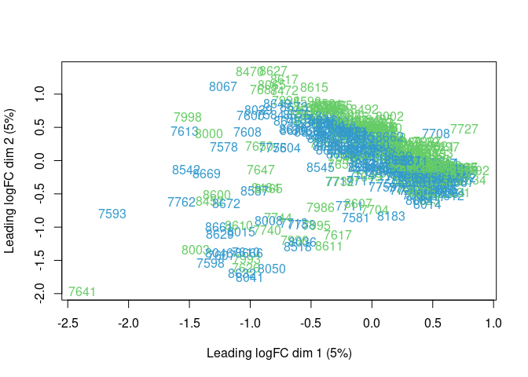
| Version | Author | Date |
|---|---|---|
| a292466 | Michael C. Saul | 2021-12-06 |
| 7687eb6 | Michael C. Saul | 2021-04-19 |
| 2e38c65 | Michael C. Saul | 2020-07-30 |
| dee6333 | Michael C. Saul | 2020-05-04 |
The MDS indicates that there are some weird points in the middle of males and females. The male samples 7998, 8497, 7993, 8080, 7732, 8496, 7977, 8077, 7731, 7981, 8081, 8605, and 7623 appear somewhere betwewen males (green) and females (blue).
However, these points show a substantial amount of noise that is not distinguishing the sexes. Based upon previous investigations of striatum data, we found that a number of samples have likely choroid plexus contamination. We can use samples with Prlr expression of greater than 10 CPM as a filter for this.
high_choroid_plexus = colnames(DO_dge)[which(cpm(DO_dge)["ENSMUSG00000005268",] > 10)]
choroid_plexus_color = ifelse(colnames(DO_dge) %in% high_choroid_plexus, "#CC3333", "#666666")
plotMDS(DO_dge, col = choroid_plexus_color)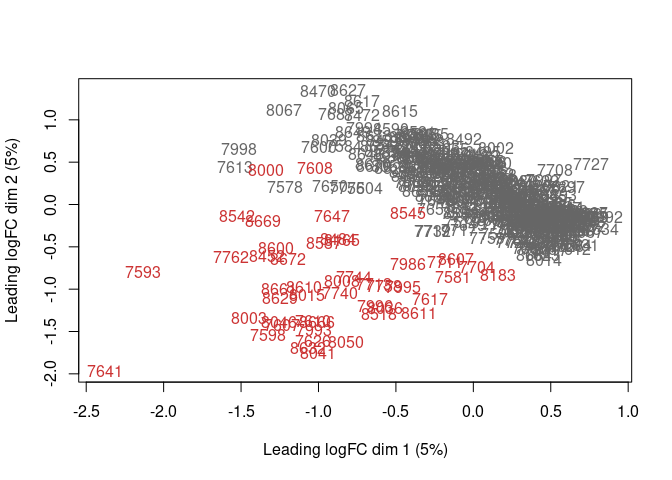
| Version | Author | Date |
|---|---|---|
| a292466 | Michael C. Saul | 2021-12-06 |
| 7687eb6 | Michael C. Saul | 2021-04-19 |
| 2e38c65 | Michael C. Saul | 2020-07-30 |
| dee6333 | Michael C. Saul | 2020-05-04 |
The samples in this location have choroid plexus contamination
Building a nuissance covariate using the log-mean of an unambiguous set
of markers for the choroid plexus contamination. Using the Sathyanesan
et al., 2012 paper from Translational Psychiatry1, which reports that
Kl and Ttr are good and unambiguous markers. Their
Ensembl gene IDs are ENSMUSG00000058488 and
ENSMUSG00000061808 respectively.
choroid_plexus_genes = c("ENSMUSG00000058488","ENSMUSG00000061808")
logmean = function(x) {
return(exp(mean(log(x))))
}
choroid_plexus_covariate = apply(cpm(DO_dge[choroid_plexus_genes,]), MARGIN = 2, FUN = logmean)
DO_pheno$choroid_plexus_covariate = choroid_plexus_covariate[row.names(DO_pheno)]For points assorting between males and females, the candidate hypothesis is that these are partial X duplication DO mice documented in Chesler et al., 20162. This can be tested by comparing how these mice cluster relative to other males on both chromosome X and chromosome 1.
First, identifying these subjects and getting all genes in Ensembl on chromosomes 1, X, and Y.
# Getting male subject IDs
male_subjects = row.names(DO_pheno[which(DO_pheno$Sex == "M"),])
male_subjects_exprs = male_subjects[which(male_subjects %in% colnames(DO_dge))]
males_intermediate = as.character(c(7998,8497,7993,8080,7732,8496,7977,8077,7731,7981,8081,8605,7623))
# Setting up biomaRt
chr_maRt = useMart(biomart = "ENSEMBL_MART_ENSEMBL",
host = "https://jan2019.archive.ensembl.org",
dataset = "mmusculus_gene_ensembl")
chr_maRt_filter = "chromosome_name"
chr_maRt_attributes = c("ensembl_gene_id")
# Setting heatmap colors
heatmapColors = colorRampPalette(c("#660066","#FFFFFF"))(n=299)
# Getting genes on various combinations of chromosome
chr1_genes = as.character(getBM(chr_maRt_attributes, chr_maRt_filter, c("1"), chr_maRt)$ensembl_gene_id)
chrX_genes = as.character(getBM(chr_maRt_attributes, chr_maRt_filter, c("X"), chr_maRt)$ensembl_gene_id)
chrY_genes = as.character(getBM(chr_maRt_attributes, chr_maRt_filter, c("Y"), chr_maRt)$ensembl_gene_id)
autosomal_genes = as.character(getBM(chr_maRt_attributes, chr_maRt_filter, as.character(1:19), chr_maRt)$ensembl_gene_id)Now clustering samples together based upon their chromosome 1 expression correlations.
# Filtering chr1 genes and looking at heatmap
chr1_genes = as.character(getBM(chr_maRt_attributes, chr_maRt_filter, c("1"), chr_maRt)$ensembl_gene_id)
chr1_genes_dge = chr1_genes[which(chr1_genes %in% row.names(DO_dge))]
males_chr1 = DO_dge[chr1_genes_dge,male_subjects_exprs]
males_chr1 = cpm(males_chr1)
males_chr1 = males_chr1[which(rowSums(males_chr1 >= 1) >= 13),]
males_col1 = ifelse(colnames(males_chr1) %in% males_intermediate,
"#66CC66","#AAAAAA")
heatmap.2(cor(males_chr1),
trace = "none",
col = heatmapColors,
dendrogram = "both",
ColSideColors = males_col1,
RowSideColors = males_col1,
main = "chr1 male gene expression correlation")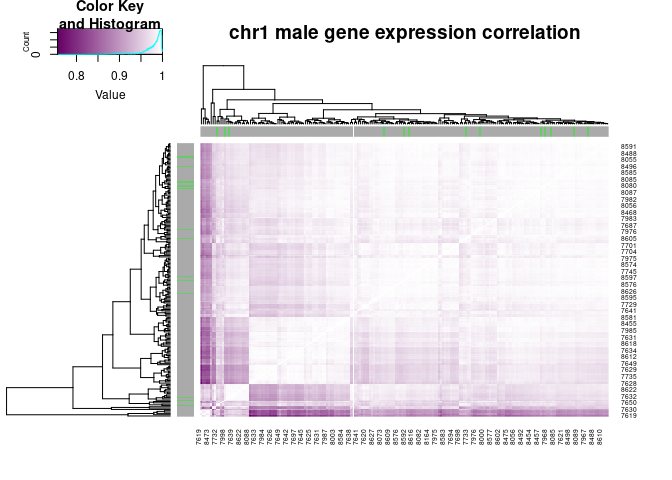
| Version | Author | Date |
|---|---|---|
| a292466 | Michael C. Saul | 2021-12-06 |
| 7687eb6 | Michael C. Saul | 2021-04-19 |
| 2e38c65 | Michael C. Saul | 2020-07-30 |
| dee6333 | Michael C. Saul | 2020-05-04 |
Nothing looks too strange on chromosome 1 with respect to these samples. However, there does appear to be an outlier point or two. We will come back to that later.
Clustering samples together based upon their chromosome X correlations.
# Filtering chrX genes and looking at heatmap
chrX_genes_dge = chrX_genes[which(chrX_genes %in% row.names(DO_dge))]
males_chrX = DO_dge[chrX_genes_dge,male_subjects_exprs]
males_chrX = cpm(males_chrX)
males_chrX = males_chrX[which(rowSums(males_chrX >= 1) >= 13),]
males_colX = ifelse(colnames(males_chrX) %in% males_intermediate,
"#66CC66","#AAAAAA")
heatmap.2(cor(males_chrX),
trace = "none",
col = heatmapColors,
dendrogram = "both",
ColSideColors = males_colX,
RowSideColors = males_colX,
main = "chrX male gene expression correlation")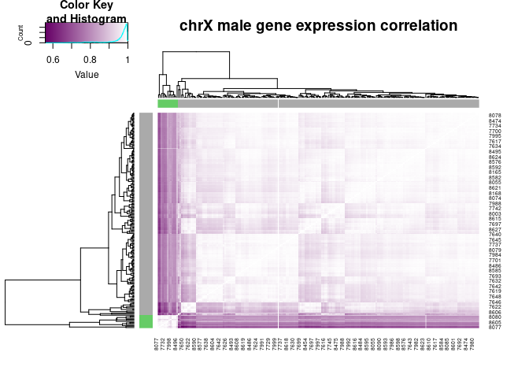
| Version | Author | Date |
|---|---|---|
| a292466 | Michael C. Saul | 2021-12-06 |
| 7687eb6 | Michael C. Saul | 2021-04-19 |
| 2e38c65 | Michael C. Saul | 2020-07-30 |
| dee6333 | Michael C. Saul | 2020-05-04 |
This is pretty clear. The unusual samples are most likely partial X duplication. They cluster on chromosome X expression, but not on chromosome 1 expression.
Chesler et al., 20163 also documents the presence of XO females. Looking at the MDS in just females to see if there are any odd candidate samples.
female_subjects = row.names(DO_pheno[which(DO_pheno$Sex == "F"),])
female_subjects_exprs = female_subjects[which(female_subjects %in% colnames(DO_dge))]
DO_female_dge = DO_dge[,female_subjects_exprs]
plotMDS(DO_female_dge, col = rep("#3399CC", times = ncol(DO_female_dge)))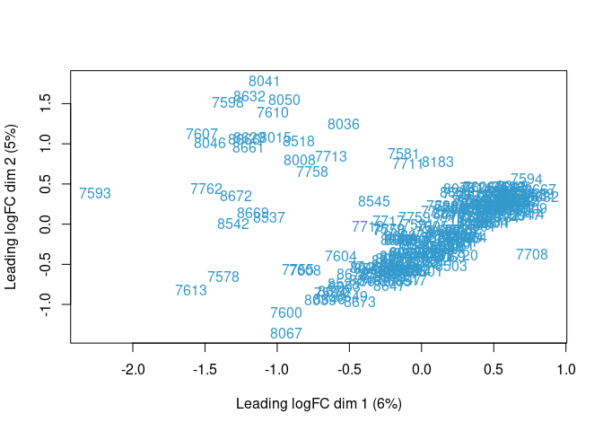
| Version | Author | Date |
|---|---|---|
| a292466 | Michael C. Saul | 2021-12-06 |
| 7687eb6 | Michael C. Saul | 2021-04-19 |
| 2e38c65 | Michael C. Saul | 2020-07-30 |
| dee6333 | Michael C. Saul | 2020-05-04 |
There are many points off the main cloud. Plotting female chromosomes 1 and X data like the male data to be certain.
# Female chr1
chr1_genes_dge = chr1_genes[which(chr1_genes %in% row.names(DO_female_dge))]
females_chr1 = DO_dge[chr1_genes_dge,female_subjects_exprs]
females_chr1 = cpm(females_chr1)
females_chr1 = females_chr1[which(rowSums(females_chr1 >= 1) >= 13),]
heatmap.2(cor(females_chr1),
trace = "none",
col = heatmapColors,
dendrogram = "both",
main = "chr1 female gene expression correlation")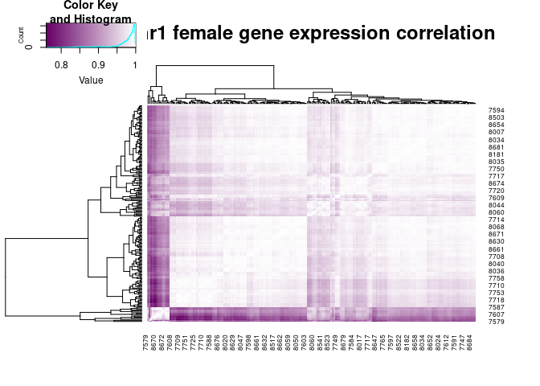
| Version | Author | Date |
|---|---|---|
| a292466 | Michael C. Saul | 2021-12-06 |
| 7687eb6 | Michael C. Saul | 2021-04-19 |
| 2e38c65 | Michael C. Saul | 2020-07-30 |
| dee6333 | Michael C. Saul | 2020-05-04 |
Again, nothing unusual, though there is a single strange sample in the chromosome 1 data again that has low correlation with the rest.
# Female chrX
chrX_genes_dge = chrX_genes[which(chrX_genes %in% row.names(DO_female_dge))]
females_chrX = DO_dge[chrX_genes_dge,female_subjects_exprs]
females_chrX = cpm(females_chrX)
females_chrX = females_chrX[which(rowSums(females_chrX >= 1) >= 13),]
heatmap.2(cor(females_chrX),
trace = "none",
col = heatmapColors,
dendrogram = "both",
main = "chrX female gene expression correlation")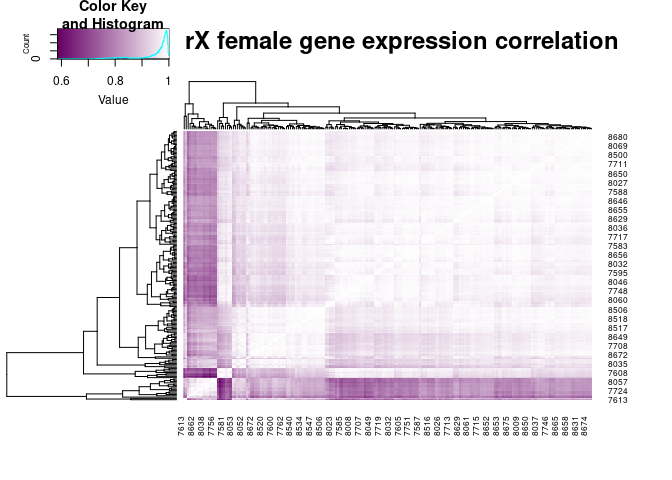
| Version | Author | Date |
|---|---|---|
| a292466 | Michael C. Saul | 2021-12-06 |
| 7687eb6 | Michael C. Saul | 2021-04-19 |
| 2e38c65 | Michael C. Saul | 2020-07-30 |
| dee6333 | Michael C. Saul | 2020-05-04 |
This looks reminiscent of the male data. Cutting the tree into 2 to identify outlier points.
female_treeX = hclust(dist(cor(females_chrX)))
female_cutX = cutree(female_treeX, k = 2)
female_colX = ifelse(female_cutX == 1, "#3399CC","#AAAAAA")
heatmap.2(cor(females_chrX),
trace = "none",
col = heatmapColors,
dendrogram = "both",
RowSideColors = female_colX,
ColSideColors = female_colX,
main = "chrX female gene expression correlation")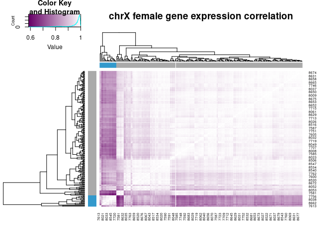
| Version | Author | Date |
|---|---|---|
| a292466 | Michael C. Saul | 2021-12-06 |
| 7687eb6 | Michael C. Saul | 2021-04-19 |
| 2e38c65 | Michael C. Saul | 2020-07-30 |
| dee6333 | Michael C. Saul | 2020-05-04 |
These samples do fall out together as a block. Trying the Y chromosome.
# Female chrY
chrY_genes_dge = chrY_genes[which(chrY_genes %in% row.names(DO_female_dge))]
females_chrY = DO_dge[chrY_genes_dge,female_subjects_exprs]
females_chrY = cpm(females_chrY)
females_chrY = females_chrY[which(rowSums(females_chrY >= 1) >= 1),]
heatmap.2(cor(females_chrY),
trace = "none",
col = heatmapColors,
dendrogram = "both",
RowSideColors = female_colX,
ColSideColors = female_colX,
main = "chrY female gene expression correlation")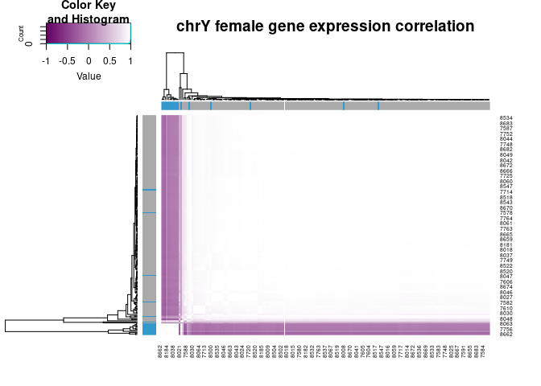
| Version | Author | Date |
|---|---|---|
| a292466 | Michael C. Saul | 2021-12-06 |
| 7687eb6 | Michael C. Saul | 2021-04-19 |
| 2e38c65 | Michael C. Saul | 2020-07-30 |
| dee6333 | Michael C. Saul | 2020-05-04 |
These females may be XY, but it’s hard to say off of 11 genes. Redoing MDS with new information.
plotMDS(DO_female_dge, col = female_colX)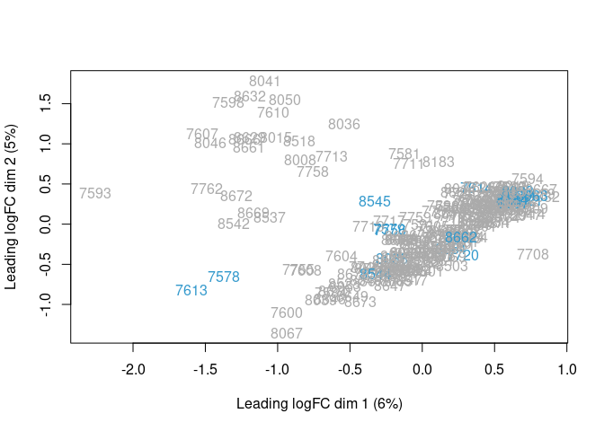
| Version | Author | Date |
|---|---|---|
| a292466 | Michael C. Saul | 2021-12-06 |
| 7687eb6 | Michael C. Saul | 2021-04-19 |
| 2e38c65 | Michael C. Saul | 2020-07-30 |
| dee6333 | Michael C. Saul | 2020-05-04 |
The presumed female XO samples do not seem to account for a large proportion of variance, but these samples should still be identified and dealt with through either censoring or an additive covariate. Also, these genomes are effectively a third and fourth sex. Creating new levels of the sex variable and creating a new phenotypic covariate that can be used to block out the X aneuoploidy independent of sex.
males_partial_X_dup = males_intermediate
females_XO = names(female_cutX[which(female_cutX == 1)])
DO_pheno$XAneuploidy = rep(NA, times = nrow(DO_pheno))
DO_pheno[which(row.names(DO_pheno) %in% colnames(DO_dge)),"XAneuploidy"] = "NotAneuoploid"
DO_pheno[which(row.names(DO_pheno) %in% males_partial_X_dup),"XAneuploidy"] = "XPartialDup"
DO_pheno[which(row.names(DO_pheno) %in% females_XO),"XAneuploidy"] = "XOFemale"
DO_pheno[which(row.names(DO_pheno) %in% males_partial_X_dup),"Sex"] = "M_XPartialDup"
DO_pheno[which(row.names(DO_pheno) %in% females_XO),"Sex"] = "F_XO"To reassess the other samples, looking at correlations between samples for all highly expressed (> 1 CPM average expression) genes on autosomes.
# Getting genes on autosomes
autosomal_genes_dge = as.character(row.names(DO_dge))
autosomal_genes_dge = autosomal_genes_dge[which(autosomal_genes_dge %in% autosomal_genes)]
DO_dge_autosomal = DO_dge[autosomal_genes_dge,]
DO_dge_autosomal = cpm(DO_dge_autosomal[which(rowMeans(cpm(DO_dge_autosomal)) >= 1),])
DO_dge_autosomal_Sex = DO_pheno[colnames(DO_dge_autosomal),"Sex"]
DO_dge_autosomal_XAneuploidy = DO_pheno[colnames(DO_dge_autosomal),"XAneuploidy"]
DO_dge_autosomal_SubjectID = row.names(DO_pheno[colnames(DO_dge_autosomal),])
heatmap.2(cor(DO_dge_autosomal),
trace = "none",
col = heatmapColors,
dendrogram = "both",
main = "autosomal expression correlation")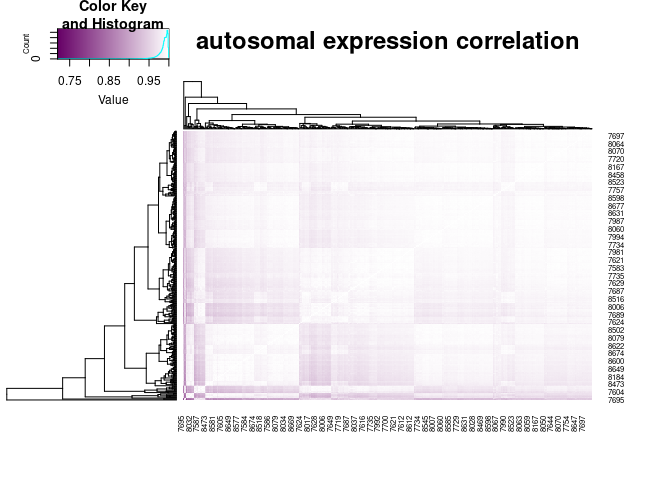
| Version | Author | Date |
|---|---|---|
| a292466 | Michael C. Saul | 2021-12-06 |
| 7687eb6 | Michael C. Saul | 2021-04-19 |
| 2e38c65 | Michael C. Saul | 2020-07-30 |
| dee6333 | Michael C. Saul | 2020-05-04 |
In the GBRS data, there was weird blockiness that was related to the rRNA 7S data. Seeing what the effects of black listing rRNA 7S is in this dataset.
rRNA_7S_genes = c("ENSMUSG00000065037",
"ENSMUSG00000099021",
"ENSMUSG00000099250")
# Getting genes on autosomes
autosomal_genes_dge = as.character(row.names(DO_dge))
autosomal_genes_dge = autosomal_genes_dge[which(autosomal_genes_dge %in% autosomal_genes)]
DO_dge_autosomal = DO_dge[autosomal_genes_dge,]
DO_dge_autosomal = cpm(DO_dge_autosomal[which(rowMeans(cpm(DO_dge_autosomal)) >= 1),])
DO_dge_autosomal = DO_dge_autosomal[which(!(row.names(DO_dge_autosomal) %in% rRNA_7S_genes)),]
DO_dge_autosomal_Sex = DO_pheno[colnames(DO_dge_autosomal),"Sex"]
DO_dge_autosomal_XAneuploidy = DO_pheno[colnames(DO_dge_autosomal),"XAneuploidy"]
DO_dge_autosomal_SubjectID = row.names(DO_pheno[colnames(DO_dge_autosomal),])
heatmap.2(cor(DO_dge_autosomal),
trace = "none",
col = heatmapColors,
dendrogram = "both",
main = "autosomal expression correlation")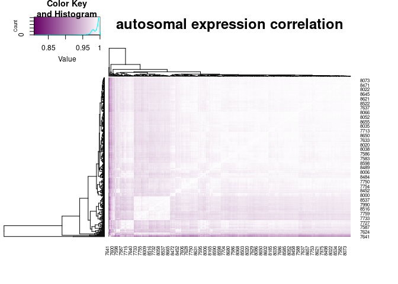
| Version | Author | Date |
|---|---|---|
| a292466 | Michael C. Saul | 2021-12-06 |
| 7687eb6 | Michael C. Saul | 2021-04-19 |
| 2e38c65 | Michael C. Saul | 2020-07-30 |
| dee6333 | Michael C. Saul | 2020-05-04 |
The samples 7613, 7624, 7641 are poorly correlated with the rest of the samples and can be considered outliers. They may be filtered out of the expression set for downstream work.
heatmap.2(cor(DO_dge_autosomal[,(-1 * which(colnames(DO_dge_autosomal) %in% c("7624","7641","7613")))]),
trace = "none",
col = heatmapColors,
dendrogram = "both",
main = "autosomal expression correlation with exclusions")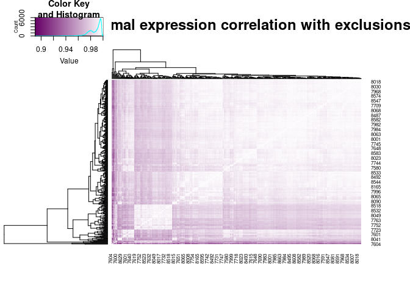
| Version | Author | Date |
|---|---|---|
| a292466 | Michael C. Saul | 2021-12-06 |
| 7687eb6 | Michael C. Saul | 2021-04-19 |
| 2e38c65 | Michael C. Saul | 2020-07-30 |
| 661f8d8 | Michael C. Saul | 2020-05-04 |
This looks as clean as the dataset will get. Using these criteria for downstream analysis.
X aneuploidy may be interesting later, but for now, they are filtered out as adding variance that is not specifically of interest to the question of what genes’ expression is correlated with the behaviors. Using this and a number of other factors to generate a variable of columns that should not be used in downstream expression analyses.
Because this is a correlational analysis, using a filtering criterion of at least 1 CPM in at least 50% of the samples.
DO_col_filter = unique(c("7624","7641","7613",row.names(DO_pheno[which(DO_pheno$XAneuploidy != "NotAneuoploid"),])))
DO_dge_filter = filterByExpr(DO_dge) # rowSums(cpm(DO_dge) > 1) > (ncol(DO_dge) / 2)Warning in filterByExpr.DGEList(DO_dge): All samples appear to belong to the
same group.DO_dge_filter[rRNA_7S_genes] = FALSE
DO_dge_filter = DO_dge_filter[row.names(DO_dge)]
DO_dge_notkept_rows = DO_dge[which(!(DO_dge_filter)),]
DO_dge_notkept_cols = DO_dge[,which(colnames(DO_dge) %in% DO_col_filter)]
DO_pheno$notkept_cols = rep("kept", times = nrow(DO_pheno))
DO_pheno[DO_col_filter,"notkept_cols"] = "not_kept"
DO_dge_unfiltered = DO_dge
DO_dge = DO_dge[which(DO_dge_filter),]Performing TMM normalization on the DGEList.
DO_dge = calcNormFactors(DO_dge, method = "TMM")Doing a log2 transform and a normal rank-transform of the data.
DO_voom = voom(DO_dge)DO_normrt = matrix(nrow = nrow(DO_voom), ncol = ncol(DO_voom))
rownames(DO_normrt) = rownames(DO_voom)
colnames(DO_normrt) = colnames(DO_voom)
for (i in 1:nrow(DO_normrt)) {
gene_i = rownames(DO_normrt)[i]
DO_normrt[i,] = norm_rank_transform(DO_voom$E[gene_i,colnames(DO_normrt)])
}
DO_normrt = DO_normrt[,colnames(DO_voom)]Collapsing and reordering the phenotype data to the same size as the
voom object
DO_pheno = DO_pheno[colnames(DO_voom),]Preparing ERCC DGEList
DO_ERCC_DGEList = DGEList(as.matrix(DO_ERCC_counts))
DO_ERCC_DGEList$samples[colnames(DO_dge),"norm.factors"] = DO_dge$samples$norm.factors
DO_ERCC_cpm = cpm(DO_ERCC_DGEList, normalized.lib.sizes = TRUE)Saving voom and DGEList objects as well as
the phenotype data frame.
saveRDS(DO_dge,paste("./data/DO_",ncol(DO_dge),"_DGEList.RDS",sep=""),compress="xz")
saveRDS(DO_dge_unfiltered,paste("./data/DO_",ncol(DO_dge_unfiltered),"_DGEList_unfiltered.RDS",sep=""),compress="xz")
saveRDS(DO_voom,paste("./data/DO_",ncol(DO_voom),"_voom.RDS",sep=""),compress="xz")
saveRDS(DO_normrt,paste("./data/DO_",ncol(DO_normrt),"_normrt.RDS",sep=""),compress="xz")
saveRDS(DO_pheno,paste("./data/DO_",nrow(DO_pheno),"_pheno.RDS",sep=""),compress="xz")
saveRDS(DO_ERCC_cpm,paste("./data/DO_",nrow(DO_pheno),"_ERCC_cpm.RDS",sep=""),compress="xz")
saveRDS(DO_ERCC_DGEList,paste("./data/DO_",nrow(DO_pheno),"_ERCC_DGEList.RDS",sep=""),compress="xz")The md5 checksums for the output files are:
| file | md5 checksum |
|---|---|
./data/DO_416_DGEList.RDS |
dac563acbd2231713221a8a962385a50 |
./data/DO_416_voom.RDS |
2440e7216cbdf9c68a0343babfc7c264 |
./data/DO_416_normrt.RDS |
7dd9ef204e017571e25961667d10f015 |
./data/DO_416_pheno.RDS |
0f0cd88dcb1483202194f5ea78b832d5 |
./data/DO_416_ERCC_DGEList.RDS |
47b4cb26c3234d3dbbd7d95ea5e61cb6 |
This document was prepared using RMarkdown in RStudio. This document was imported into workflowr on 2020-05-04.
sessionInfo()R version 4.2.1 (2022-06-23)
Platform: x86_64-pc-linux-gnu (64-bit)
Running under: Ubuntu 20.04.6 LTS
Matrix products: default
BLAS: /usr/lib/x86_64-linux-gnu/openblas-pthread/libblas.so.3
LAPACK: /usr/lib/x86_64-linux-gnu/openblas-pthread/liblapack.so.3
locale:
[1] LC_CTYPE=en_US.UTF-8 LC_NUMERIC=C
[3] LC_TIME=en_US.UTF-8 LC_COLLATE=en_US.UTF-8
[5] LC_MONETARY=en_US.UTF-8 LC_MESSAGES=en_US.UTF-8
[7] LC_PAPER=en_US.UTF-8 LC_NAME=C
[9] LC_ADDRESS=C LC_TELEPHONE=C
[11] LC_MEASUREMENT=en_US.UTF-8 LC_IDENTIFICATION=C
attached base packages:
[1] stats graphics grDevices utils datasets methods base
other attached packages:
[1] ggbeeswarm_0.7.2 biomaRt_2.54.1 RColorBrewer_1.1-3 gplots_3.1.3
[5] ggplot2_3.4.2 edgeR_3.40.2 tximport_1.26.1 tibble_3.2.1
[9] limma_3.54.2
loaded via a namespace (and not attached):
[1] bitops_1.0-7 fs_1.5.2 bit64_4.0.5
[4] filelock_1.0.2 progress_1.2.2 httr_1.4.4
[7] rprojroot_2.0.3 GenomeInfoDb_1.34.9 tools_4.2.1
[10] bslib_0.4.0 utf8_1.2.2 R6_2.5.1
[13] vipor_0.4.5 KernSmooth_2.23-20 DBI_1.1.3
[16] BiocGenerics_0.44.0 colorspace_2.0-3 withr_2.5.0
[19] tidyselect_1.2.0 prettyunits_1.1.1 bit_4.0.4
[22] curl_4.3.3 compiler_4.2.1 git2r_0.32.0
[25] cli_3.4.1 Biobase_2.58.0 xml2_1.3.3
[28] sass_0.4.2 caTools_1.18.2 scales_1.2.1
[31] readr_2.1.3 rappdirs_0.3.3 stringr_1.5.0
[34] digest_0.6.30 rmarkdown_2.17 XVector_0.38.0
[37] pkgconfig_2.0.3 htmltools_0.5.3 highr_0.9
[40] dbplyr_2.2.1 fastmap_1.1.0 rlang_1.1.1
[43] rstudioapi_0.14 RSQLite_2.2.18 jquerylib_0.1.4
[46] generics_0.1.3 jsonlite_1.8.3 vroom_1.6.0
[49] gtools_3.9.4 dplyr_1.1.2 RCurl_1.98-1.9
[52] magrittr_2.0.3 GenomeInfoDbData_1.2.9 Rcpp_1.0.9
[55] munsell_0.5.0 S4Vectors_0.36.2 fansi_1.0.3
[58] lifecycle_1.0.3 stringi_1.7.8 whisker_0.4
[61] yaml_2.3.6 zlibbioc_1.44.0 BiocFileCache_2.6.1
[64] grid_4.2.1 blob_1.2.3 parallel_4.2.1
[67] promises_1.2.0.1 crayon_1.5.2 lattice_0.20-45
[70] Biostrings_2.66.0 hms_1.1.2 KEGGREST_1.38.0
[73] locfit_1.5-9.6 knitr_1.42 pillar_1.9.0
[76] stats4_4.2.1 XML_3.99-0.11 glue_1.6.2
[79] evaluate_0.17 tzdb_0.3.0 png_0.1-7
[82] vctrs_0.6.2 httpuv_1.6.6 purrr_1.0.1
[85] gtable_0.3.1 assertthat_0.2.1 cachem_1.0.6
[88] xfun_0.39 later_1.3.0 beeswarm_0.4.0
[91] AnnotationDbi_1.60.2 memoise_2.0.1 IRanges_2.32.0
[94] workflowr_1.7.0 ellipsis_0.3.2 Sathyanesan M, Girgenti MJ, Banasr M, Stone K, Bruce C, Guilchicek E, Wilczak-Havill K, Nairn A, Williams K, Sass S, Duman JG, Newton SS. 2012. A molecular characterization of the choroid plexus and stress-induced gene regulation. Transl Psychiatry 2:e139. doi:10.1038/tp.2012.64↩︎
Chesler EJ, Gatti DM, Morgan AP, Strobel M, Trepanier L, Oberbeck D, McWeeney S, Hitzemann R, Ferris M, McMullan R, Clayshultle A, Bell TA, Pardo-Manuel de Villena F, Churchill GA. 2016. Diversity Outbred mice at 21: maintaining allelic variation in the face of selection. G3: Genes, Genomes, Genetics 6:3893–3902. doi:10.1534/g3.116.035527↩︎
Chesler EJ, Gatti DM, Morgan AP, Strobel M, Trepanier L, Oberbeck D, McWeeney S, Hitzemann R, Ferris M, McMullan R, Clayshultle A, Bell TA, Pardo-Manuel de Villena F, Churchill GA. 2016. Diversity Outbred mice at 21: maintaining allelic variation in the face of selection. G3: Genes, Genomes, Genetics 6:3893–3902. doi:10.1534/g3.116.035527↩︎